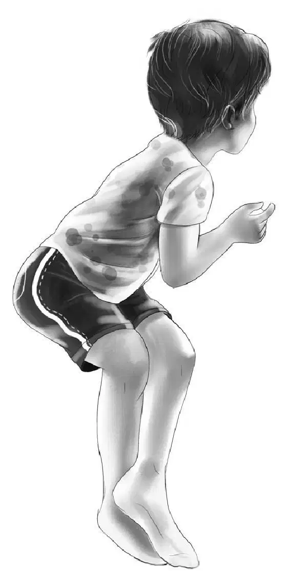
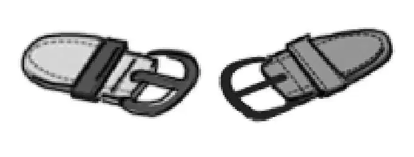
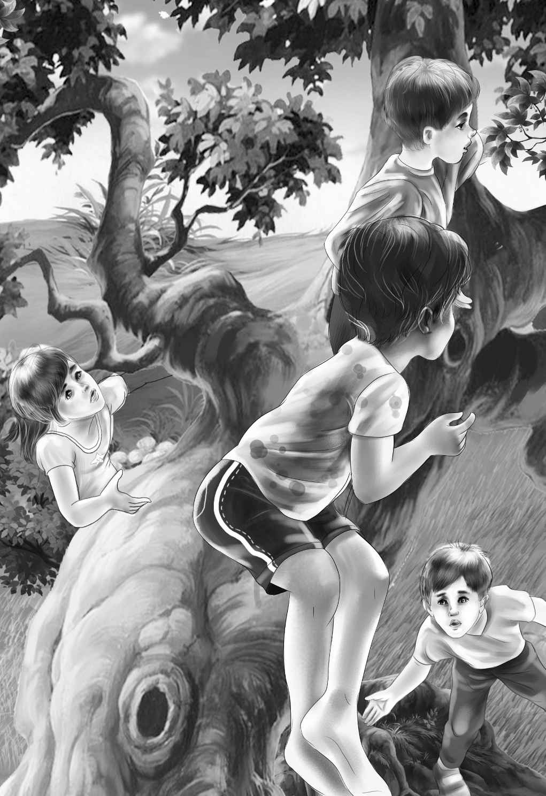
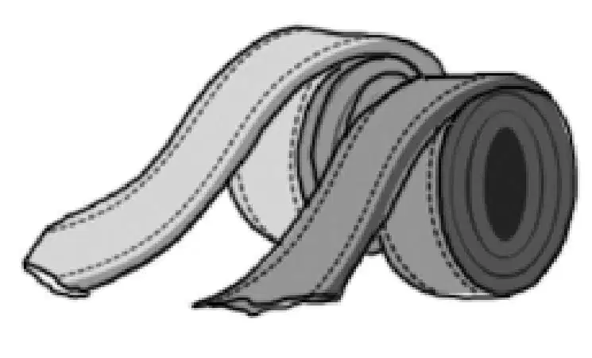
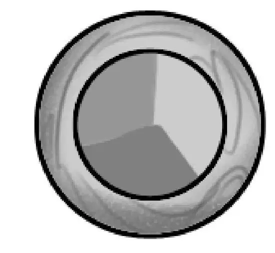
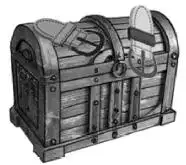

Then for two days it rained. Benny and Henry put on their raincoats and went over to see Sammy and Jeffrey.
Henry showed them how to make a sign for the tree house with their names on it, so they had something to do. Benny showed them how to tie knots in a rope. They could use it to climb up to the tree house and pull it in after them.
While the boys were working with the rope they began to talk to Benny. Jeffrey said, “Remember how Uncle Max said the old house seemed spooky?”
“Yes,” Benny answered. “But it doesn’t seem spooky to you, does it?”
Sammy said, “Maybe sometimes it does. Last night when I was in bed I heard it storming and blowing outside. Then right over my head I heard a funny sort of rocking sound—just what Uncle Max said. I felt scared and got Jeffrey. I didn’t want to bother Mom or Dad. They don’t like to be waked up for nothing.”
“That’s right,” Jeffrey said. “But I didn’t hear anything. I told him it was just his imagination. I bet Uncle Max imagined it, too.”
“But you went up to the attic with me to look around this morning,” Sammy said. “You wanted to see if there was anything that would rock.”
“Was there?” asked Benny.
Jeffrey shook his head.“We couldn’t find anything. It was just Sammy’s imagination.”
“Maybe,” Sammy said.
At last the sun came out again, bright and warm.The boys went out at once and soon finished the other wall of the house.
The next day they began to make the roof. First they stood in a row on the ground and looked up.
“Doesn’t it look wonderful?” said Jeffrey. “I’m glad the roof doesn’t have a point at the top.”
“Your dad was clever,” Henry agreed. “A slanting roof is much quicker and easier to build. And it makes a roof out over the porch, too.”
Sammy said, “We can even sit on the porch when it rains—if the rain comes straight down.”
Benny added, “The rain will run back toward the tree—and not down your necks.”
Henry picked up the longest board he had. He climbed up and started to put in the long runners. “When these runners are in, you boys can start fitting in the roof.”
“Don’t you think it will leak?” asked Jeffrey.
“Well, it may,” Henry called down. “But that’s the fun of a tree house. You can always make it better.”
“I’ll get the carpet,” said Sammy. “Maybe we can put it in today, if we get the roof on.”
Jessie and Violet helped him measure the floor. Then they helped him cut the rug to fit. It was ready to tack down as soon as the roof was done.
Soon the two Beach boys were pounding away on their roof.

“Don’t hurry,” advised Benny.
“I’m not hurrying,” answered Sammy. “We have all day to get the roof on. Then the house will be done.”

But a little later Sammy stopped working.
Benny thought, “He’s tired. After all, he is only eight years old.”
But Sammy was not tired. He was sitting on a branch looking up at something. At last he said, “Benny, there’s a big knothole up in this branch. I think I can reach it. Maybe there are baby squirrels in it or baby woodpeckers.”
“Wait,” Benny called. “I’m coming up, too. But watch out! Squirrels have sharp teeth.”
Before Benny could get up the tree, Sammy was already standing on tiptoes, reaching into the hole as far as he could with his hand.
There was something. It wasn’t a squirrel. It wasn’t a woodpecker. What was it? Sammy pulled his hand out. “I know I felt something, Ben! ” he said.
“Well, try again, Sammy. Pull it out if you can.”
Sammy took a deep breath and put his hand back in the hole. “Here goes, everybody! ”
His fingers did touch something. It wasn’t soft. It was hard and smooth. Sammy stretched a little higher. Dry leaves and dust fell from the hole.
“Here’s something else!” Sammy said. He pulled out what looked like a long crooked twig. It was twisted and hard. “It’s a piece of leather, I think,” Sammy said.
He handed it to Ben. “Sure is,” Benny agreed. “Only it’s rotted. What else can you find? Maybe this is part of a strap.”
Sammy dug down into the hole again, took a tight hold, and pulled.
Out came something long, and shaped like a box. “This is pretty heavy,” said Sammy. “What is it? It’s dirty, that’s sure.”
“Well,this looks like a case for one thing,” Benny said. “See? It’s made of the same leather as the other piece. What do you suppose is in it?”Benny found two buckles on it and began to open the case.

“It’s been there a long time,” Henry said.
“I have a guess,”Benny said.The case fell open.
“Oh!” everyone said. “The spyglass!”
“Sammy, you take this end and pull,” Benny said. “And Jeffrey, you hold the other end.”
Sammy held onto his end and started to pull.
“Pull it way out, Sam,”Henry called from below.
“You know what?” said Jeffrey. “This must be the lost spyglass. It has to be!”
“But how did it get here?” Jeffrey asked.
“Remember the man who helped your dad and Uncle Max build their tree house?” Henry asked. “He must have put it there himself while he was working on the roof. He probably forgot to tell the boys.”
“I think that was the way it was,” nodded Benny. “Let me have a look.”

He drew out the telescope a little farther and looked all around. He could even see the next field through the oak leaves.
Benny pointed the spyglass toward the Beach house. He looked at the roof. He could see every shingle. Then he saw a round window near the roof.
“I’ve never seen that round window before,” Benny said, puzzled.
“Let me look,” Jeffrey said. “Our house hasn’t any round windows, just square ones.”
“Well, there it is,” Benny said. “You can see it, too.”
Jeffrey and Sam took turns looking through the telescope. The window was at the back of the house, on the third floor.

“Just where is it, Ben? ” Jessie called.
“It must be in the attic,” Benny said.
Henry, Violet, and Jessie looked up. They tried to see through the branches. Henry called, “We can’t see any round window from here. The trees are in the way and so is the porch roof.”
“Well, you can see it from here,” said Jeffrey. “It is made of colored glass.”
Henry climbed up the tree and took the glass. And there was the little round window up near the roof. It was made of blue and green and red glass.
Then Henry climbed down and Jessie climbed up. She saw the window at once.
Benny said, “One thing is sure. You can see that window from the tree, but you can’t see it from the ground.”
Jeffrey nodded. He said, “You can’t see it from inside the house, either. Sammy and I explored that rainy day. We went all over the attic. We use that top floor to put things in. Mom hung some clothes there on hooks.”
“Come on,” said Sammy. “Let’s all go into the house and hunt for that window.”
Jessie shook her head. “No, Sammy, I don’t think we Aldens had better go. You’d better wait and ask your parents first. You two boys could go alone, though.”
“No!” said both boys at once. Sammy shook his head firmly. “It wouldn’t be any fun without you Aldens. But if we ask, will you go with us?”
“Of course,” said Benny. “I don’t think we ought to hunt around in anyone’s house without their knowing.”
“I suppose not,” said Jeffrey. “I suppose we ought to finish the roof.”
They finished the roof, but they could hardly wait for their family to come home.
Jeffrey said, “We seem to spend all our time asking Mom if we can do this and that! I do wish we could go up in that attic right now.”
Benny said smiling, “You’re not the only one, Jeffrey! I’m dying to go!”